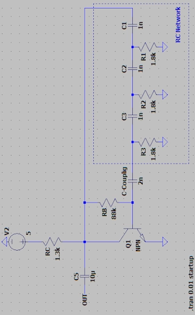
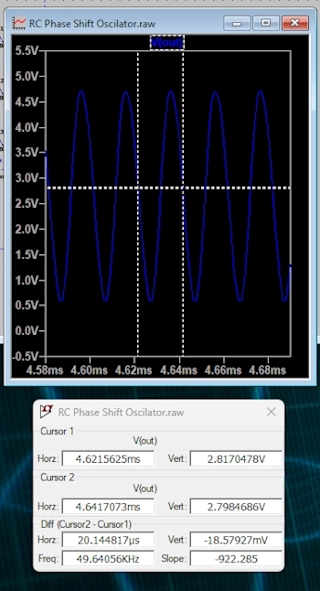

This circuit is commonly used to create LFO (low frequency oscillator) oscillators, for frequencies ranging from a few Hertz to a few Kilo-Herts..
For oscillation to occur in the Hertz range, use capacitances in the range of micro-Henry units. For the Kilo-Hertz range, use capacitances of a few nano-Henry units.
HOW TO IMPLEMENT (Tested from 50Hz to 500KHz):
First see the shematic image below.
The collector resistance value is RC=ZNet and the current is IC=VCC/Znet, for the base current IB=IC/Hfe (Hfe transistor gain), and the base resistance (RB) becomes (VCC-0.8)/IB.
To calculate the value of the coupling capacitor (C-Coupling): Use the capacitive reactance calculator, using this oscillation frequency, and the reactance the value of ZNet.
NOTE: If there is a large discrepancy in the oscillation value, adjust C-Coupling gradually.
DON´T FORGET:Start simulation with DC Power Supply set to 0 Volt.
Calculate the value of (F) frequency, R (resistance) or C (capacitance) by filling in two of the available fields, leaving the value of the desired element blank.
The other fields are used to compute the transistor polarization for correct maximum excursion, for basic polarization use upper anotation using the ZNet Impedance.
The Net R and the Net C are the values for RC Network to use in C1,2,3 and R1,2,3.
For Cpupling Capacitor (C-Coupling), use the capacitive reactance calculator, using this oscillation frequency, and the reactance the value of ZNet.
| F | Frequency in Hertz |
| R | Resistance in Ohm |
| C | Capacitance in Farad |
| N | Number of RC Network Stages (3 in these case) |
| ZNet | RC Network Impedance in Ohm |
| VCC | |
| Hfe | |
| F | |
| Net R | |
| Net C | |
| ZNet | |
| RC | |
| IC | |
| RB | |
| ---| Cientific Notation |--- | ||||
| femto | pico | nano | micro | mili |
| e-15 | e-12 | e-9 | e-6 | e-3 |
| Kilo | Mega | Giga | Tera | Peta |
| e+3 | e+6 | e+9 | e+12 | e+15 |

